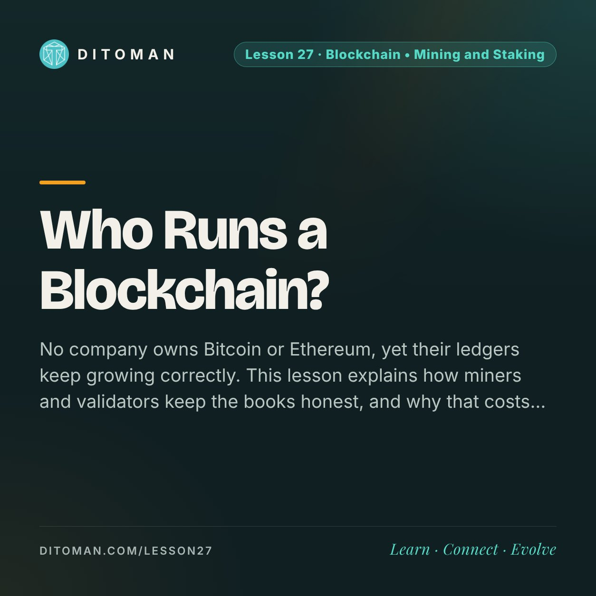

Quem gere uma blockchain?
چه کسی بلاکچین را اداره میکند؟
Nenhuma empresa é dona da Bitcoin ou da Ethereum, e no entanto os seus registos continuam a crescer corretamente. Esta lição explica como mineradores e validadores mantêm as contas honestas, e porque isso custa alguma coisa.
هیچ شرکتی مالک بیتکوین یا اتریوم نیست، ولی دفترشان درست بزرگ میشود. این درس توضیح میدهد استخراجکنندهها و اعتبارسنجها چطور دفتر را صادق نگه میدارند و چرا این کار هزینه دارد.
Conteúdo da lição
محتوای درس
Leia a lição em inglês ou persa.
درس را به فارسی یا انگلیسی بخوانید.
Um banco tem um dono, um gestor e um número de telefone. Uma blockchain pública não tem nada disto. Milhares de computadores no mundo guardam o mesmo livro-razão, e ninguém manda nele.
Então, quem decide que transações entram a seguir? E porque haveria alguém de fazer batota, ou não?
01. O problema a resolver
Qualquer livro-razão precisa de uma regra: todos têm de concordar sobre a página seguinte. Se duas pessoas pudessem acrescentar duas páginas seguintes diferentes, o dinheiro poderia ser gasto duas vezes.
Um banco resolve isto sendo o único árbitro. Uma blockchain resolve-o com um método, chamado mecanismo de consenso, em que muitos desconhecidos chegam a acordo sem confiarem uns nos outros.
02. Prova de trabalho: mineração
A Bitcoin usa prova de trabalho. Os mineradores juntam transações pendentes num bloco e tentam encontrar um número que, combinado com os dados do bloco e passado pelo hash, dê um resultado abaixo de um alvo. Como explica o learnmeabitcoin, isto significa fazer o hash do cabeçalho do bloco, com duplo SHA-256, vezes sem conta até um resultado ficar abaixo do alvo.
Não há atalho além de tentar. O primeiro minerador a conseguir partilha o bloco, e os outros verificam-no rapidamente.
A rede procura produzir um novo bloco a cada cerca de 10 minutos. A cada 2 016 blocos, cerca de duas semanas, a dificuldade ajusta-se para o ritmo se manter estável, independentemente de quantos mineradores entram ou saem.
03. O que recebem os mineradores
O minerador vencedor recebe uma recompensa pelo bloco, chamada coinbase, mais as taxas das suas transações. A recompensa não pode ser gasta até ter 100 blocos de idade, o que protege contra a substituição de um bloco.
O custo é o objetivo. Os mineradores gastam eletricidade e equipamento reais, por isso fazer batota tem de valer mais do que o custo de agir honestamente.
| Prova de trabalho (Bitcoin) | Prova de participação (Ethereum) | |
|---|---|---|
| Quem propõe os blocos | Mineradores | Validadores |
| O que está em jogo | Eletricidade e equipamento | Um depósito (32 ETH para operar sozinho) |
| Penalização por fraude | Trabalho desperdiçado | Corte do depósito (slashing) |
| Consumo de energia | Alto | Cerca de 99,99% menos após o Merge (estimativa) |
04. Prova de participação: validadores
A Ethereum passou para a prova de participação. Em vez de gastar energia, os validadores põem dinheiro em risco. Para operar um validador sozinho deposita 32 ETH, e existem pools para quem tem menos.
Se um validador agir de forma desonesta, parte ou todo o seu depósito pode ser destruído. Esta penalização chama-se slashing. Segundo o ethereum.org, a penalização inicial começa em 1/4096 do saldo efetivo, com um máximo de 0,5 ETH, e depois o validador é removido.
05. Quanto mudou o consumo de energia
A mudança deu-se a 15 de setembro de 2022, o dia do Merge. O Cambridge Centre for Alternative Finance estimou que o consumo de eletricidade da Ethereum caiu cerca de 99,99%.
06. Nós: quem verifica
Mineradores e validadores propõem blocos, mas qualquer computador que corra o software, um nó, pode verificar as regras. Um bloco que viole as regras é rejeitado, mesmo que tenha sido caro de produzir.
07. A maioria pode fazer batota?
Na prova de trabalho, alguém que controle a maior parte do poder de mineração pode reescrever a história recente. Chama-se ataque de 51%. Exige recursos enormes, e o alvo fica mais fraco quanto mais pequena for a rede.
Os dois sistemas respondem à mesma pergunta: tornar a batota mais cara do que a honestidade.
O que retirar disto
Uma blockchain precisa de uma forma de desconhecidos chegarem a acordo sobre a página seguinte.
Prova de trabalho: os mineradores gastam energia a calcular hashes até um resultado ficar abaixo do alvo.
Prova de participação: os validadores põem dinheiro em risco e podem ser penalizados (slashing).
Os nós verificam as regras, mesmo sem produzir blocos.
Ambos procuram tornar a batota mais cara do que a honestidade.
یک بانک مالک، مدیر و شمارهی تلفن دارد. بلاکچین عمومی هیچکدام را ندارد. هزاران رایانه در سراسر دنیا یک دفتر را نگه میدارند و هیچکس مسئولش نیست.
پس چه کسی تصمیم میگیرد کدام تراکنشها بعدی وارد شوند؟ و چرا کسی تقلب کند یا نکند؟
۰۱. مسئلهای که باید حل شود
هر دفتری یک قاعده لازم دارد: همه باید روی صفحهی بعدی توافق کنند. اگر دو نفر بتوانند دو صفحهی بعدی متفاوت اضافه کنند، پول میتواند دو بار خرج شود.
بانک با داور واحدبودن این را حل میکند. بلاکچین با روشی حلش میکند به نام سازوکار اجماع، که در آن غریبههای زیادی بدون اعتماد به هم توافق میکنند.
۰۲. اثبات کار: استخراج
بیتکوین از اثبات کار استفاده میکند. استخراجکنندهها تراکنشهای در انتظار را در یک بلاک جمع میکنند و سپس دنبال عددی میگردند که همراه دادهی بلاک هش شود و نتیجهاش زیر یک هدف باشد. به توضیح learnmeabitcoin، این یعنی هشکردن سرآیند بلاک با double SHA-256 بارها و بارها تا نتیجه زیر هدف بیفتد.
میانبری جز امتحانکردن نیست. اولین استخراجکنندهای که موفق شود بلاک را منتشر میکند و بقیه سریع بررسیاش میکنند.
شبکه هدفش یک بلاک جدید در هر حدود ۱۰ دقیقه است. هر ۲٬۰۱۶ بلاک، تقریباً دو هفته، دشواری تنظیم میشود تا هر قدر استخراجکننده بیاید یا برود، سرعت ثابت بماند.
۰۳. استخراجکنندهها چه میگیرند
استخراجکنندهی برنده پاداش بلاک را میگیرد، به نام «کوینبیس»، بهعلاوهی کارمزد تراکنشهای آن. این پاداش تا ۱۰۰ بلاک بعد قابل خرج نیست، که جلوی جایگزینشدن بلاک را میگیرد.
هزینه همان نکته است. استخراجکنندهها برق و تجهیزات واقعی خرج میکنند، پس تقلب باید ارزشش از هزینهی صادقانهکارکردن بیشتر باشد.
| اثبات کار (بیتکوین) | اثبات سهام (اتریوم) | |
|---|---|---|
| چه کسی بلاک پیشنهاد میدهد | استخراجکنندهها | اعتبارسنجها |
| چه چیزی در خطر است | برق و تجهیزات | یک سپرده (۳۲ اتر برای اجرای مستقل) |
| جریمهی تقلب | کار هدررفته | اسلشینگ سپرده |
| مصرف انرژی | زیاد | حدود ۹۹٫۹۹٪ کمتر پس از ادغام (برآورد) |
۰۴. اثبات سهام: اعتبارسنجها
اتریوم به اثبات سهام تغییر کرد. بهجای خرج انرژی، اعتبارسنجها پول را در معرض خطر میگذارند. برای ادارهی یک اعتبارسنج مستقل ۳۲ اتر سپرده میکنید و برای کسانی که کمتر دارند «استخر» هست.
اگر اعتبارسنجی نادرست رفتار کند، بخشی از سپرده یا همهی آن میتواند نابود شود. این جریمه «اسلشینگ» (slashing) نام دارد. طبق ethereum.org جریمهی اولیه از ۱/۴۰۹۶ موجودی مؤثر شروع میشود، سقفش ۰٫۵ اتر است، و بعد اعتبارسنج کنار گذاشته میشود.
۰۵. مصرف انرژی چقدر عوض شد
این تغییر در ۱۵ سپتامبر ۲۰۲۲، روز «ادغام» (Merge) اتفاق افتاد. مرکز مالی جایگزین دانشگاه کمبریج برآورد کرد مصرف برق اتریوم حدود ۹۹٫۹۹٪ کاهش یافت.
۰۶. نودها: کسانی که بررسی میکنند
استخراجکنندهها و اعتبارسنجها بلاک پیشنهاد میدهند، ولی هر رایانهای که نرمافزار را اجرا کند، یعنی یک نود، میتواند قاعدهها را بررسی کند. بلاکی که قاعده را بشکند رد میشود، حتی اگر ساختنش گران بوده باشد.
۰۷. آیا اکثریت میتواند تقلب کند؟
در اثبات کار، کسی که بیشترِ توان استخراج را در دست داشته باشد میتواند تاریخ اخیر را بازنویسی کند. این «حملهی ۵۱٪» نام دارد. منابع عظیمی میخواهد و هر چه شبکه کوچکتر باشد هدف ضعیفتر است.
هر دو نظام به یک پرسش جواب میدهند: تقلب را گرانتر از صداقت کنید.
چه برداشتی کنیم
بلاکچین راهی لازم دارد تا غریبهها روی صفحهی بعدی توافق کنند.
اثبات کار: استخراجکنندهها انرژی خرج میکنند و هش میزنند تا نتیجه زیر هدف بیفتد.
اثبات سهام: اعتبارسنجها پول را در معرض خطر میگذارند و ممکن است اسلش شوند.
نودها قاعدهها را بررسی میکنند، حتی بدون ساختن بلاک.
هر دو میخواهند تقلب را گرانتر از صداقت کنند.
Duas lições relacionadas
دو درس مرتبط
A lição 28 mostra o que a Ethereum corre por cima disto: programas que se executam sozinhos. A lição 30 explica o calendário que define como são pagos os mineradores da Bitcoin.
درس ۲۸ نشان میدهد اتریوم روی این پایه چه چیزی اجرا میکند: برنامههایی که خودشان اجرا میشوند. درس ۳۰ برنامهای را توضیح میدهد که پاداش استخراجکنندههای بیتکوین را تعیین میکند.
Conceitos-chave
مفاهیم کلیدی
- Mecanismo de consenso
- Prova de trabalho
- Mineração e dificuldade
- Recompensa por bloco
- Prova de participação
- Validador e slashing
- Nó
- Ataque de 51%
- سازوکار اجماع
- اثبات کار
- استخراج و دشواری
- پاداش بلاک
- اثبات سهام
- اعتبارسنج و اسلشینگ
- نود
- حملهی ۵۱٪
Objetivos de aprendizagem
اهداف یادگیری
- Explique porque uma blockchain precisa de um método de consenso.
- Descreva a prova de trabalho em palavras simples.
- Descreva a prova de participação e o slashing.
- Dizer o que faz um nó.
- Explique o que é um ataque de 51%.
- توضیح بدهید چرا بلاکچین به روش اجماع نیاز دارد.
- اثبات کار را ساده توصیف کنید.
- اثبات سهام و اسلشینگ را توصیف کنید.
- بگویید نود چه میکند.
- توضیح بدهید حملهی ۵۱٪ چیست.
Questionário
آزمونک
Veja o que ficou consigo. A resposta está por baixo de cada pergunta.
ببین چه چیزی در ذهنت مانده. پاسخ زیر هر پرسش آمده است.
Pergunta 1
پرسش ۱
Com que frequência aproximada a rede Bitcoin procura produzir um bloco?
شبکهی بیتکوین تقریباً هر چند وقت یک بلاک را هدف میگیرد؟
A. Mais ou menos a cada 10 minutos
الف. تقریباً هر ۱۰ دقیقه
B. Em cada segundo
ب. هر ثانیه
C. Uma vez por dia
ج. روزی یک بار
Resposta certa: A
پاسخ درست: الف
Pergunta 2
پرسش ۲
Com que frequência se ajusta a dificuldade da Bitcoin?
دشواری بیتکوین هر چند وقت تنظیم میشود؟
A. A cada 2 016 blocos, cerca de duas semanas
الف. هر ۲٬۰۱۶ بلاک، حدود دو هفته
B. Em cada bloco
ب. هر بلاک
C. Nunca
ج. هرگز
Resposta certa: A
پاسخ درست: الف
Pergunta 3
پرسش ۳
O que é o slashing?
اسلشینگ چیست؟
A. Destruir parte ou todo o depósito de um validador desonesto
الف. نابودکردن بخشی یا همهی سپردهی اعتبارسنج نادرست
B. Um desconto nas comissões
ب. تخفیف کارمزد
C. Uma nova moeda
ج. یک کوین جدید
Resposta certa: A
پاسخ درست: الف
Pergunta 4
پرسش ۴
Quanto ETH é preciso para operar um validador sozinho?
برای اجرای مستقل یک اعتبارسنج چند اتر لازم است؟
A. 32 ETH
الف. ۳۲ اتر
B. 1 ETH
ب. ۱ اتر
C. 1,000 ETH
ج. ۱٬۰۰۰ اتر
Resposta certa: A
پاسخ درست: الف
Pergunta 5
پرسش ۵
O que procuram ambos os métodos de consenso?
هر دو روش اجماع چه هدفی دارند؟
A. Tornar a batota mais cara do que a honestidade
الف. گرانتر کردن تقلب از صداقت
B. Esconder o livro-razão
ب. پنهانکردن دفتر
C. Escolher uma empresa como chefe
ج. انتخاب یک شرکت بهعنوان رئیس
Resposta certa: A
پاسخ درست: الف
Fontes
منابع
- learnmeabitcoin: mineração, tempo de bloco, ajuste de dificuldade a cada 2 016 blocos, maturação da coinbase, ataque de 51%
- ethereum.org: prova de participação, o depósito de 32 ETH, pools de staking e slashing
- Cambridge Centre for Alternative Finance: o consumo de eletricidade da Ethereum após o Merge (15 de setembro de 2022)
O valor de 99,99% é uma estimativa do Cambridge Centre for Alternative Finance. O intervalo entre blocos e o período de dificuldade são metas de desenho, não garantias para cada bloco. Explicação geral, não aconselhamento de investimento.
رقم ۹۹٫۹۹٪ برآورد مرکز مالی جایگزین کمبریج است. فاصلهی بلاکها و دورهی دشواری اهداف طراحیاند، نه تضمین برای هر بلاک. توضیح عمومی است، نه توصیهی سرمایهگذاری.
با هم دنبال میکنیمAcompanhe
As novas lições são anunciadas primeiro nos canais do Ditoman.
درسهای تازه اول در کانالهای دیتومان معرفی میشوند.